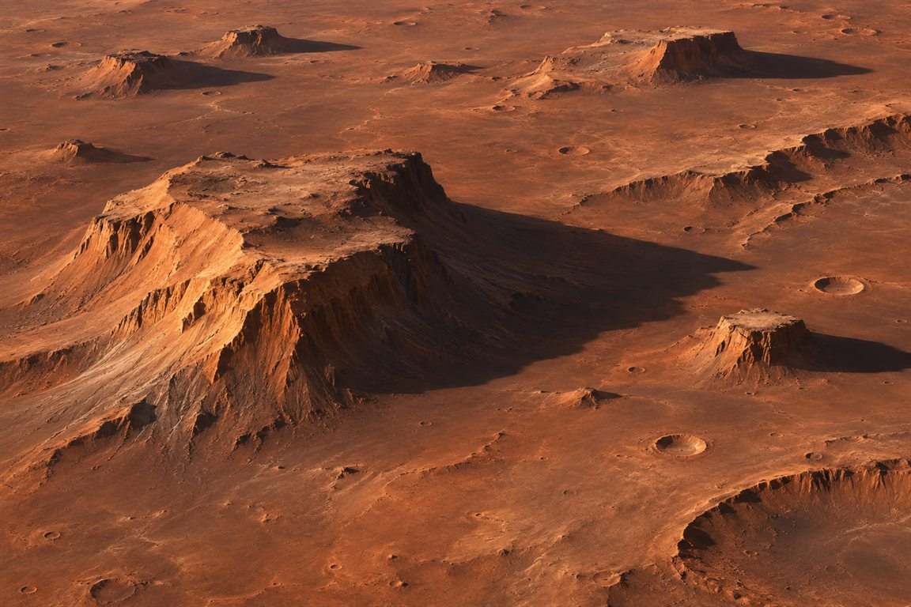

Cydonia: Martian Mystery Region
Explore the geology of Cydonia alongside the history of the Face on Mars. The dossier ties orbital imagery to terrain, ice and climate while tracing the region’s reputation as a mystery.

On this page
Summary
Cydonia is one of the most useful regions in the entire Mars folder because it concentrates two stories at the same time: a real scientific story about Martian geology, ice, and climate; and a cultural history about the Face on Mars, apparent ruins and lost civilizations. The strength of this note is in treating Cydonia not as evidence of architecture, but as a point of collision between real landscape and human imagination.
What does the source actually contain?
The THEMIS/Mars Odyssey page is not written to debate conspiracies, but to describe Cydonia as a geological transition region between the cratered highlands and the northern lowlands. The text highlights:
- the dichotomy between martian highlands and lowlands
- the presence of eroded mesas, craters and relatively smooth terrain between them
- instrumental evidence of hydrogen compatible with ice or water in the subsurface
- long-term climate processes, including Martian ice ages
- geomorphological explanations for striking features, including the famous
Face
Why it matters within X Files
- It is the most useful official node to bring down the myth of Cydonia
- shows that a place can be scientifically fascinating without needing artificialistic hypotheses
- serves as a direct counterpart to Face on Mars: Official Image Reanalysis
- allows connecting Martian folklore with serious discussion about past habitability, ice and erosion
Useful metadata
| Field | Data |
|---|---|
| Region | Cydonia Mensae |
| Context | transition between Arabia Terra and the northern lowlands |
| Operational source | THEMIS / Mars Odyssey feature page |
| Image coordinates | 40.2°N, 350.2°E |
| Reported image size | 87.5 x 106.6 km |
| Resolution reported | 18 m |
| Iconic trait | The Face |
What scientific stories does the fountain cross
1) The great Martian dichotomy
The note reminds us that Cydonia is right where one of the big geological questions about Mars becomes visible: why there is such a marked difference between high cratered lands and low northern plains. That question remains strong and is not fully resolved.
2) Ice/water in the subsoil
The source says that Mars Odyssey instruments found strong hydrogen signal in this part of Mars. The suggested interpretation is the presence of water or shallow ice beneath the surface. This makes Cydonia scientifically interesting for real reasons, independent of Face.
3) Mars as a planet with climatic cycles
The page emphasizes that Mars also passes through ice ages, driven by orbital and inclination variations. That helps explain deposits rich in ice and dust, collapse of mantles and landforms.
4) The Face as an eroded table
The source is explicit: the Face is one of several eroded tables. The celebrity of the feature does not arise because it is geologically impossible, but because a specific image made it anthropomorphic.
Useful Cydonia Case Structure
Block A — transitional landscape
Cydonia does not appear as archaeological site, but as a geomorphological border. That context matters because many anomalistic readings eliminate the landscape and are left with only the rare object.
Block B—water/ice signals
The strong story here is not a monument, but the possible role of water and ice in shaping the terrain. This is the most scientifically fertile block.
Block C — suggestive shapes
Mesas, covered slopes and certain local geometries trigger artificial readings. The key point is that the source offers plausible natural mechanisms rather than architecture.
Block D — cultural reappropriation
Outside the official sphere, Cydonia becomes the perfect setting for ruin theories. That's where X Files' value is born.
Main claims of the source
- Cydonia is a geologically complex and real region, not a conspiratorial invention
- the Face is an eroded table within a landscape of similar tables
- there is instrumental evidence compatible with hydrogen/shallow ice in the regional subsurface
- part of the relief can be explained by erosion, ice-rich deposits, mantle collapse and processes comparable to cold terrestrial environments
- region matters for Martian climate history, not just folklore
What makes Cydonia such a powerful case?
Because the place does have real rarity
It's not just a visual meme. Cydonia combines:
- transitional topography
- prominent tables
- craters with different degrees of conservation
- ice/sublimation/erosion processes
Because a famous image colonized everything else
The Face dragged Cydonia into a symbolic reading where every nearby feature can seem like a wall, pyramid, or avenue.
Because it mixes strong science with open narrative
When a terrain is already scientifically strange, it is easier for the imaginary to scale from interesante to artificial.
Critical reading
What it does show
- that Cydonia is a real and scientifically interesting region for geological and climatic reasons
- that there are plausible and detailed natural explanations for the Face and other local features
- that the folklore of Cydonia is based on a truly unique landscape, not on pure invention
What it does not prove
- that there are ruins, monuments or Martian urban planning
- that the region's visual singularity implies non-human intelligence
- that a striking table suffices as evidence of artificial construction
Useful interpretation
Cydonia should not be read as prueba or desmentido total del imaginario marciano. It should be read as the case where the complete mechanism is best seen:
1. geologically interesting terrain
2. ambiguous image
3. anthropomorphic reading
4. enduring myth
5. official rereading for better data
How to use this note on the wiki
- as an official baseline when reading any claim about ruins in Cydonia
- as a bridge between Mars science and the cultural history of anomalies
- as required context before reading more speculative material on the Face
Related
Face on Mars: Official Image Reanalysis Mars X Files: Anomalies vs Official Readings Ancient Water on Mars and Climate Loss Mars X Files Map Research map Archive home